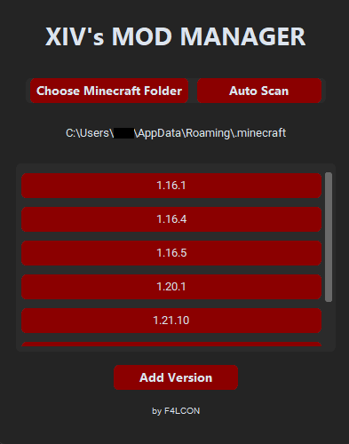

XIV's Mod Manager | The XIV Project
I have created a Mod Manager for Minecraft
to help users manage different mod folders for different versions.

You can download the Mod Manager here: XMM
It is fully built with Python using the Tkinter library for the GUI.
It allows you to create, delete, and switch between different mod folders easily.
This is especially useful for Minecraft players who want to use different mods for different versions of the
game without having to manually move files around.